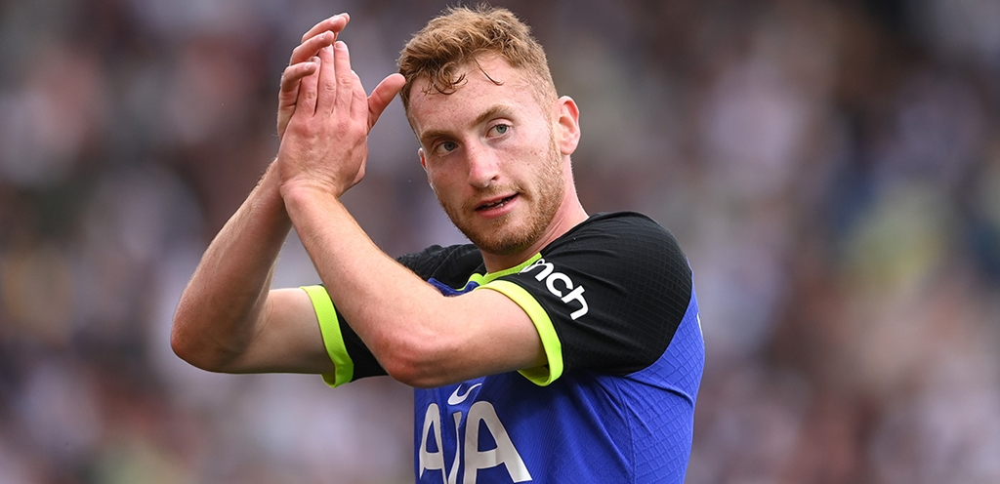

- Profile
Dejan Kulusevski (Macedonian: Дејан Кулушевски; born 25 April 2000) is a Swedish professional footballer who plays as a winger or midfielder for Premier League club Tottenham Hotspur and the Sweden national team.
- career
He joined the Atalanta youth system on 7 July 2016, also made his Serie A debut on 20 January 2019 with Atalanta. Before starting 2019-2020 season, Kulusevski signed to Parma on loan. He proved his true worth in the first half of the 2019-2020 season. His performance was enough to appeal to big culubs, on 2 January 2020, Kulusevski joined fellow Serie A club Juventus. Through Juventus, he entered Tottenham, to be the owner of the num. 21.
